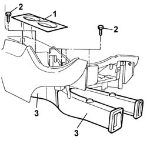
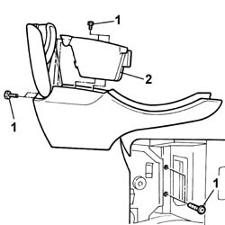
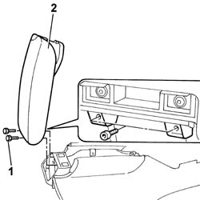
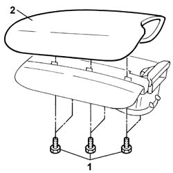
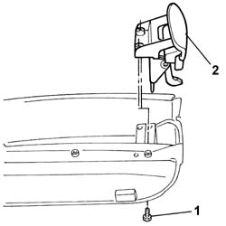
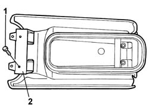
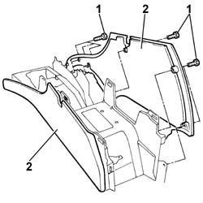
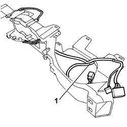
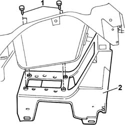

7040L21 TUNNEL COVER - Dismantling and reassembly at the bench
- Path
- Procedures > 70 FITTINGS > 7040 BODY INTERIOR UPHOLSTERY AND TRIM > 7040L PASSGNER COMPARTMENT FLOOR COVERING > 7040L21 TUNNEL COVER - Dismantling and reassembly at the bench
- Kind
- repair procedure (removal / refitting; the operation number is the code)
- Applies to
- all engines; all production periods
- Interactive page
- https://sloeber94.github.io/elrnDB-lThss/en/#/126632
Applies to: all engines; all production periods
 Removing
Removing
 Refitting
Refitting1. Remove the rubber bottle holder trim.
2. Undo the upper bolts fixing the climate control air duct.
3. Remove the duct

Applies to: all engines; all production periods
1. Undo the bolts fixing the oddments tray in the tunnel cover.
2. Remove the oddments tray.

Applies to: all engines; all production periods
1. Undo the bolts fixing the armrest flap.
2. Remove the flap.

Applies to: all engines; all production periods
1. Undo the bolts fixing the armrest flap trim.
2. Remove the trim.

Applies to: all engines; all production periods
1. Undo the bolts fixing the armrest flap lock.
2. Remove the lock.

Applies to: all engines; all production periods
1. Undo the bolts fixing the armrest flap hinges.
2. Remove the hinges.

Applies to: all engines; all production periods
1. Undo the bolts fixing the left and right side trims on the tunnel cover.
2. Remove the side trims.

Applies to: all engines; all production periods
1. Release the cable loom from the retaining bands and remove it.

Applies to: all engines; all production periods
1. Undo the bolts fixing the tunnel cover frame.
2. Remove the frame.

Applies to: all engines; all production periods
Refitting
Removing- Fit the reinforcement frame on the tunnel cover tightening the bolts.
- Fasten the electrical wiring to the retaining springs.
- Fit the left and right side panels for the tunnel cover trim.
- Fit the oddments tray tightening the fixing bolts.
- Fit the air ducts tightening the fixing bolts.
- Position the rubber bottle holder trim.
- Fit the oddments tray cover fastening on the cover tightening the fixing bolts.
- Fit the hinges on the armrest flap tightening the fixing bolts.
- Fit the oddments tray cover trim on the cover tightening the fixing bolts.
- Fit the oddments tray cover on the tunnel cover tightening the fixing bolts. Fit the oddments tray cover on the tunnel cover tightening the fixing bolts.